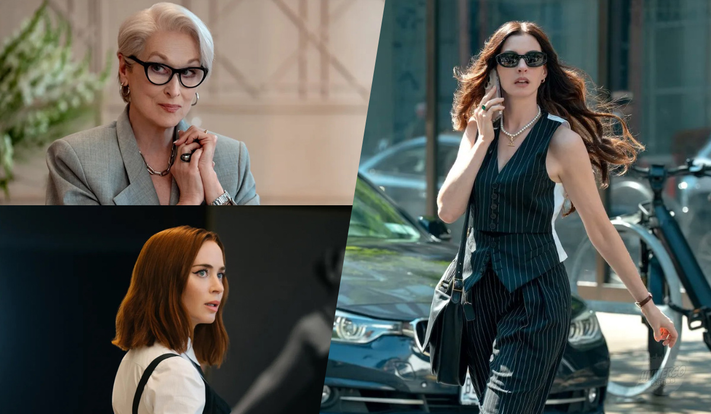

Duas décadas depois do primeiro filme, era fácil imaginar que essa continuação seria apenas mais um retorno movido pela nostalgia. Felizmente, O Diabo Veste Prada 2 consegue fugir desse destino. A sequência atualiza sua narrativa para uma era dominada pelo digital, pelas novas dinâmicas de trabalho e pela constante disputa por relevância, sem abandonar a sofisticação e o humor passivo-agressivo que transformaram o original em um clássico. É a prova de que, quando existe um bom roteiro por trás, revisitar personagens queridos pode funcionar muito bem.
Se no primeiro filme acompanhávamos o encantamento de Andy ao entrar no universo da alta moda, aqui o reencontro acontece de forma menos glamourosa. A protagonista se vê envolvida em uma disputa empresarial que cresce conforme a trama avança, trazendo novos conflitos e tensões para a história. O elenco principal continua muito bem entrosado, enquanto os novos personagens adicionam frescor ao longa e são aproveitados com eficiência. As participações especiais ajudam a enriquecer a experiência, e as clássicas alfinetadas continuam afiadas como sempre.

Um dos pontos mais interessantes da sequência é ver uma faceta diferente de Miranda. A personagem ganha momentos menos rígidos e até inesperadamente cômicos, sem perder a presença intimidadora que a define. Ainda assim, o roteiro escorrega em alguns momentos específicos, recorrendo a acontecimentos convenientes demais para acelerar determinados conflitos.
“Entre alfinetadas, ambição e caos corporativo, O Diabo Veste Prada 2 mostra que certas histórias ainda sabem desfilar com elegância.”
Mesmo com esses tropeços, o filme entrega exatamente o que promete: entretenimento elegante, diálogos afiados e uma evolução perceptível dos personagens principais. Enquanto o primeiro longa concentrava grande parte do desenvolvimento em Andy, aqui o crescimento do elenco como um todo se destaca muito mais. No fim, O Diabo Veste Prada 2 consegue equilibrar nostalgia e renovação sem parecer preso ao passado.
✔ O QUE É BOM
- Atualização Relevante
- Evolução de Personagens
- Excelente química entre o elenco principal e os novos personagens
✖ O QUE NÃO É BOM
- Coincidências Narrativas
- Menos Impacto Visual
Discussão e Opiniões